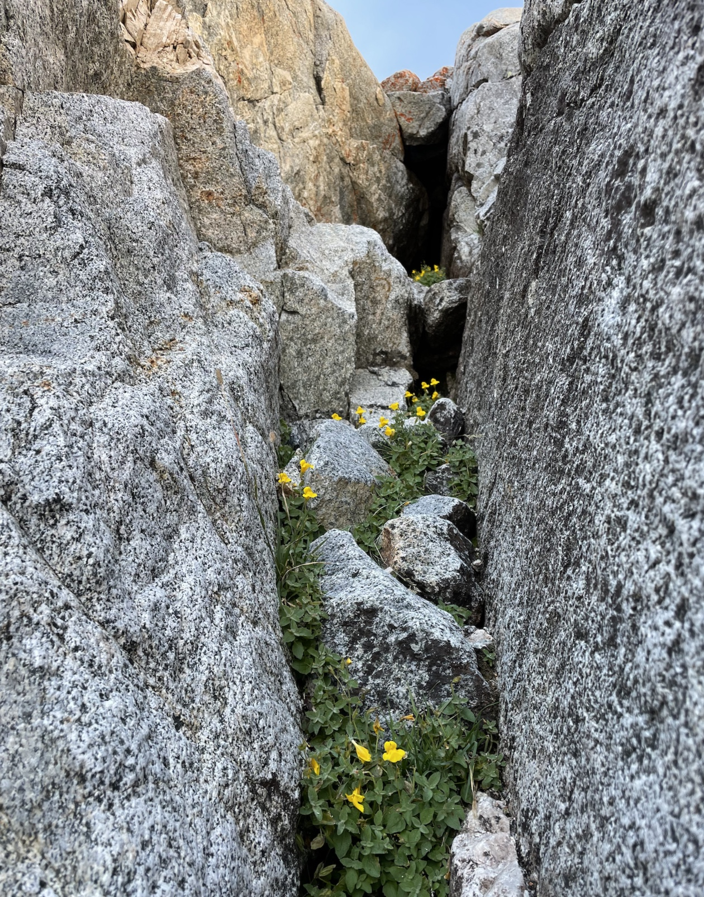
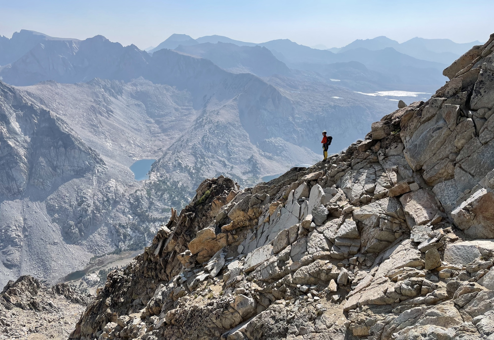

Mount Emerson - Waterfall Route and homemade ice cream
Mica checking out Mount Emerson, view from Little Egypt near Bishop. May 2020
Maybe starting an alpine route at 11:30am is not taking the Sierra seriously enough. I thought this climb/hike was just really fun.
- Trailhead: North Lake Hiker Parking (37.230580, -118.618835), or the overflow up the road. Many stern warnings against day parking at North Lake Campground.
- Route: Waterfall route (SE face, 5.5), descending the South Slope (class 2, class 3 at the top).
- Total distance: 8.5 miles, 4,122 ft gain. 7.5 hours car-to-car in a non-rushed pace.
- Approach: 2.5mi trail + 0.2mi cross-country, 1900 ft gain. 1.5 hours with lunch. Hitched a ride from overflow parking.
- Climb: 1 mile, 2,122 ft gain. 2 hours 40 min
- Descent: 5 miles, 4,074 ft drop. 2 hours 45 min with swim. Walked a little extra to overflow parking.
- Good for dogs?: no, even the descent had a bit of class 3.
Mount Emerson via the Waterfall Route (SE face, 5.5), and class 2-3 descent. gpx.
>Trip report
It was almost 10:30am when we left the house in Mammoth to check out conditions at the trailhead, ready to turn around at the car park if the smoke was bad. I could barely see Mt Tom or the White Mountains as we descended into Bishop, which felt like bad luck. But the air improved as we passed Aspendell, so we went for it!
We hitched a ride with a retired geologist in a truck (who stopped to converse with a geologist walking up the road with a hammer in hand) and started the approach at 11:30pm.
The air felt more clean as we went higher up! which made me feel optimistic about this excursion turning out better than holing up at home with the air purifiers.
>Waterfall route
We intended to solo then rope up whenever I felt uncomfortable, but in the end Marco hiked the half rope and handful of cams/nuts up in his pack, as “training weight” :’)
I found the chimney quite comfy (my fingers are in 5.10 rock climbing shape, but I never solo anything), especially with all the hand cracks, chockstone jugs, and off-widths I could slot my butt into and rest in. Compared to Cathedral (5.6) and Tenaya (5.5) (which are admittedly very differently styled climbs from one another and difficult to compare), I would want to simul and not solo those, but I would solo Emerson again.
On the other hand, I have heard the chimney is slick with water early-season, and have heard of very bad epics and accidents on this route from beginner climbers. Let’s just say I’m glad I did this after I was comfortable well above the grade, acclimated, and trail-running and cross-country slogging all summer, which kept my experience solidly in the type 1 fun category.
I don‚Äôt own approach shoes, so I wore oversized climbing shoes the entire way to the summit. My partner did the whole thing in approach shoes (but he also climbs 5.10 trad in approach shoes üò±).

>Rockfall
The gully was definitely the loosest part of the climb. There’s no obvious route, aside from finding the most solid rock possible. We passed a party of 2, and scrambled up a different way than they did.
At one point I knocked off a small rock, which hit my hand as it tumbled down the slope. I didn’t yell “rock!” as quickly as I could have. That small rock triggered loose rocks to slide, which caused a large rock to glance off the shoulder of one of the other party, who was directly below us at this point. We yelled if everyone was ok, and it sounded like the person hit by the rock was upset and had a sore shoulder, but was otherwise able to continue. Pretty spooky.
If this climb were 10 miles further into the backcountry then I’d say the route is solid and safe for small parties that are communicating, but since it’s just an hour or two from the road, the chance of multiple parties is high, and that makes rockfall a serious issue ):
>Ridge

I arrived at the summit after 2 hours 40 min of climbing, as Marco ate some expired candy found in the summit register (?!). The hazy view was better towards the west and worse in the north (toward the direction of the Caldor Fire). I found both of Alicia’s signatures from this year.
To the north are many familiar faces. Checkered Demon is the closest. Behind it, Humphreys, Basin, and Tom. Enhance
{kind=link}

To the southeast. I can recognise the Bishop Pass peaks (Cloudripper, Picture Puzzle, Agassiz, Mount Goode, even little Chocolate Peak) but west of that, I’m not sure. Need to spend some time out there :D Enhance
>Descending the south slope

The trick with the descent is to keep left (skier’s left). I kept getting sucked out right, which cliffed out. Closer to the bottom, the left is a faster sandy use trail whereas the right is loose talus.
The entire time I was thinking about how some people take this slog both down and up the mountain. The climbing route was a much more pleasant way up :O
We hit the trail after 1 hour 15 of descending! So nice to not be slipping around anymore.
The walk out on trail is casual. I’m usually somewhat sensitive about smoke during cardio, but I was feeling great. We’re back in Bishop in time for dinner at Mountain Rambler, which my friends assure me doesn’t taste as amazing when you haven’t just climbed a big mountain :D
Comments
No comments at the moment. Hey, you could write one \o/